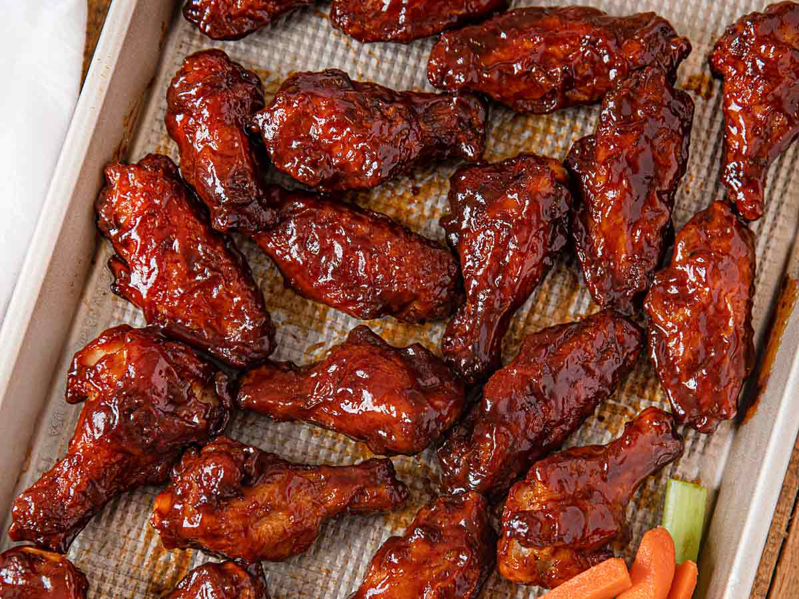

BBQ Chicken Wings

Mouth watering bbq wings
This yummy honey barbeque sauce is great on chicken wings, pork, or short ribs. The soy sauce and oyster sauce hint at an Asian inspiration, while the gin gives it an undeterminable edge.
Ingredients
- 1/2 cup teriyaki sauce
- 1 cup oyster sauce
- 1/4 cup soy sauce
- 1/4 cup ketchup
- 2 tablespoons garlic powder
- 1/4 cup gin
- 2 dashes liquid smoke flavouring
- 1/2 cup white sugar
- 1 1/2 pounds chickens, separated at joints, tips discarded
- 1/4 cup honey
Steps
- In a large bowl, mix the teriyaki sauce, oyster sauce, soy sauce, ketchup, garlic powder, gin, liquid smoke, and sugar. Place the chicken wings in the bowl, cover, and marinate in the refrigerator 8 hours or overnight.
- Preheat the grill for low heat
- Lightly oil the grill grate. Arrange chicken on the grill, and discard the marinade. Grill the chicken wings on one side for 20 minutes, then turn and brush with honey. Continue grilling 25 minutes, or until juices run clear.